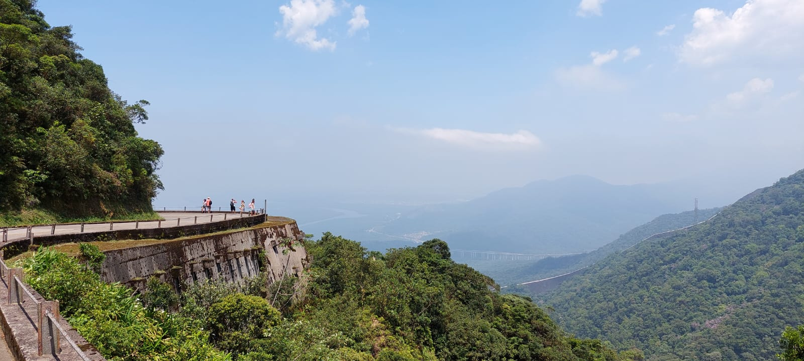
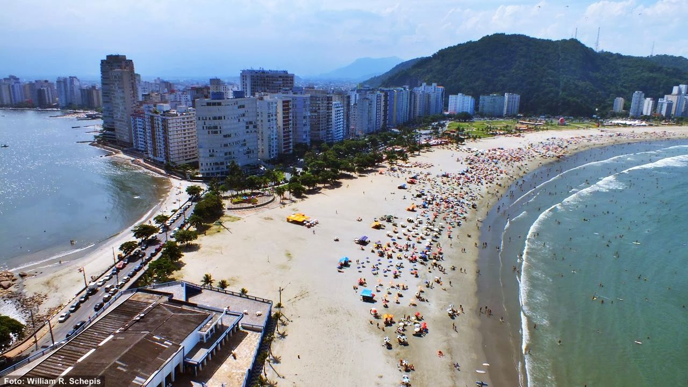

História
Origens e Colonização
Antes da chegada dos portugueses, a região era habitada pelos índios Tupiniquins e Tupiniquins do Mar, grupos ligados aos Tupiniquins de São Vicente. No século XVI, com a fundação da Vila de São Vicente em 1532 por Martim Afonso de Sousa, Cubatão tornou-se ponto de passagem estratégico para bandeirantes e jesuítas que transitavam entre o litoral e o planalto. Durante séculos, a área foi marcada pela extração de recursos, ganhando o nome de Cubatão no século XVIII devido às pedreiras de calcário (cubata) essenciais para a construção de São Paulo.
O Século XX e a Industrialização A transformação radical de Cubatão ocorreu no final do século XIX e explodiu no século XX, impulsionada por dois fatores determinantes:
A Ferrovia e a Indústria Pesada: A chegada da Estrada de Ferro Sorocabana em 1880 abriu caminho para o desenvolvimento industrial, consolidado com a instalação da Fábrica de Cimento Portland Itambé em 1906. Nas décadas de 1940 e 1950, a região tornou-se o coração industrial do país com a instalação da Petrobrás (refinaria em 1960) e da Usina Termelétrica (1970), atraindo cerca de 1.500 indústrias para uma área de apenas 15 km².
A Crise e Recuperação Ambiental: Esse crescimento acelerado gerou, nas décadas de 1970 e 1980, uma crise ecológica severa que rendeu à cidade a alcunha internacional de "Vale da Morte" (ou "Valle del Caos" na imprensa italiana), devido à poluição extrema. A virada começou nos anos 2000 com investimentos maciços em despoluição e projetos de revitalização, como o Projeto Cubatão Limpa (2010).
A Emancipação Política Diferente de muitos vizinhos litorâneos, Cubatão buscou autonomia cedo, desvinculando-se de São Vicente para gerir seu próprio boom industrial.
Data Histórica: A separação ocorreu em 1944, sendo elevada oficialmente à categoria de município em 24 de janeiro de 1945.
Hoje, com cerca de 140.000 habitantes (dados de 2022), a cidade mantém sua base econômica fortemente ligada à indústria petroquímica e de transformação
Pontos Turísticos de Cubatão
Caminhos do Mar: O principal atrativo natural da cidade. São trilhas históricas que cortam a Mata Atlântica pela Serra do Mar, com acesso direto pela Via Anchieta. O local é certificado com excelência em turismo de aventura (2022) e recebe eventos de corrida, ciclismo e triatlo, mantendo a preservação de rotas usadas desde o período colonial.

Praia do Itararé: Embora a praia de 2.400 metros de extensão fique tecnicamente em São Vicente (entre a Ilha Porchat e a Ilha Urubuqueçaba), Cubatão serve como um dos principais pontos de acesso terrestre para quem vem do planalto.

Curiosidade
Impacto no Transporte da Baixada: A localização estratégica de Cubatão já parou a região inteira. Em 2013, um acidente náutico no Guarujá interrompeu as balsas, forçando ciclistas e motoristas a desviarem por Cubatão e enfrentarem trechos difíceis perto da refinaria e do Porto de Santos, mostrando como a cidade é o "gargalo" obrigatório entre o litoral norte e sul.